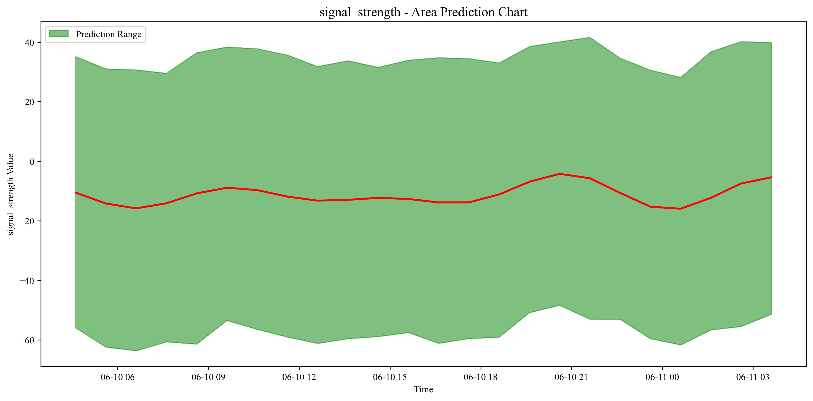
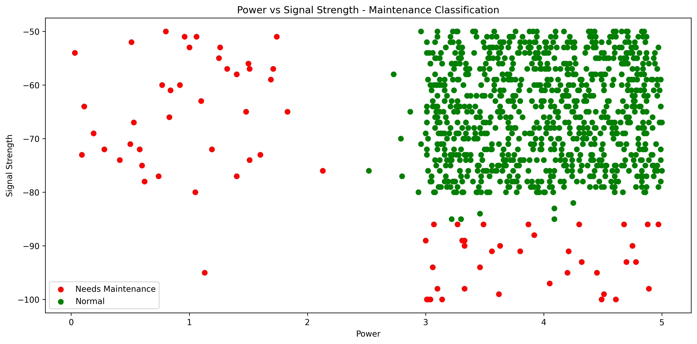
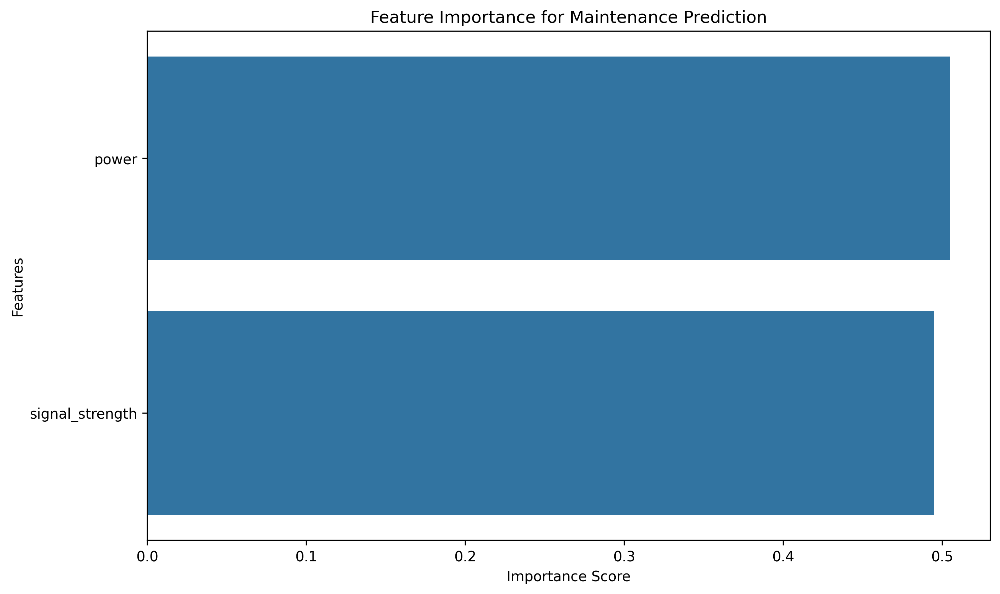
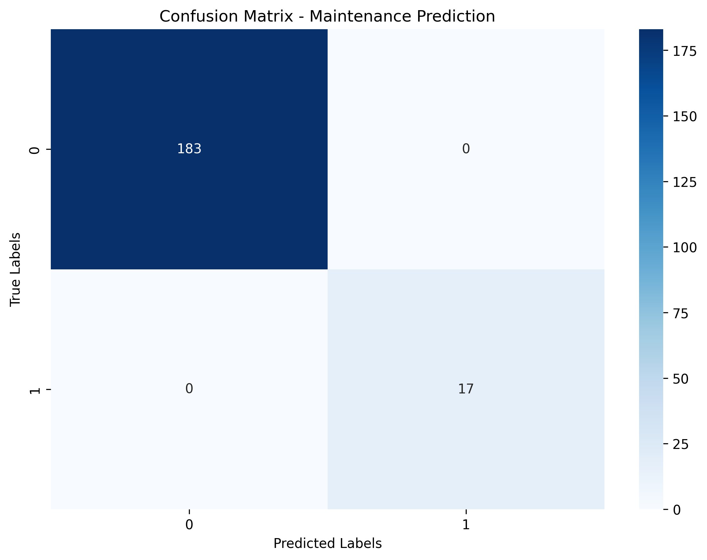

模拟数据生成
构造训练、测试、人工干预与时间序列数据，使模型原型能在没有真实设备数据时快速验证。
sensor_ID · power · signal_strength · timestampSMART SENSOR INTELLIGENCE
一个面向智能传感器的预测性维护原型。从模拟数据、异常发现，到趋势预判与维护建议，构建完整的机器学习闭环。
PROJECT MISSION
设备维护不应发生在故障之后。本项目将传感器的功率、信号强度、时间戳等运行信息转化为可执行洞察，帮助使用者更早发现风险、理解趋势，并给出维护建议。它既适合在缺少真实设备数据时快速验证算法，也能作为接入实时数据后的预测性维护原型基础。
HOW IT WORKS
CORE MODULES
构造训练、测试、人工干预与时间序列数据，使模型原型能在没有真实设备数据时快速验证。
sensor_ID · power · signal_strength · timestamp使用 Isolation Forest 识别偏离正常工作区间的设备，并输出疑似异常传感器清单。
StandardScaler · IsolationForest · Plotly以已标注故障样本训练 XGBoost，将异常信号转化为“是否需要维护”的可执行建议。
XGBoost · Accuracy · Feature Importance借助 Prophet 预测未来 24 小时的功率或信号强度，并呈现预测区间与不确定性。
Prophet · 24h Forecast · Confidence IntervalMODEL OUTPUTS
项目输出预测均值及置信区间、异常设备清单、维护需求标签和模型评估结果。以下图表来自项目的改进版流程。




TECHNOLOGY
主要输出包括 anomalies.csv、forecast_data.csv、prediction_result.csv，以及污染率分析、特征重要性、混淆矩阵、ROC 曲线等图表。异常检测、时间序列预测和维护分类可独立使用，也可串联为完整的设备健康监测流程。